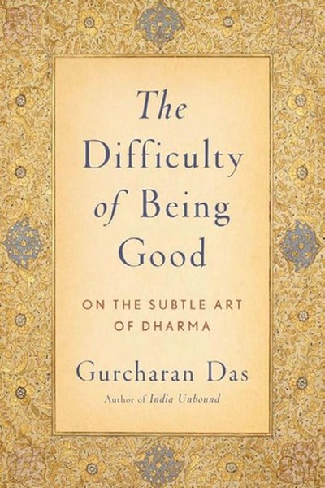

Library › Psychology & People
The Difficulty of Being Good — Summary & Key Lessons

Why the Mahabharata is the world's greatest manual on ethics.
📖 OPEN THE FULL INTERACTIVE BREAKDOWN →🌐 Read it in Hindi, Hinglish, Gujarati, Tamil & 22 more languages — free, with audio.
💡 The Big Idea
The Mahabharata is not a story about gods and heroes; it is a series of ethical experiments on the human soul. Every character faces a genuine moral dilemma with no clean answer: should Bhishma break an oath to stop a war? Should Karna lie about his birth? Das examines each case with modern moral philosophy and concludes that the difficulty of being good is not a bug in the human system — it is the system. The book is a training manual for living with moral complexity.
🧠 The 7 Key Lessons
Lesson 1: Dhritarashtra's Blindness — The Cost of Avoidance
The Blind King
Dhritarashtra's physical blindness symbolizes his moral blindness: he sees his son Duryodhana's injustice and looks away, again and again. Das's point: avoidance is not neutrality. The king who refuses to see wrongdoing enables it. The lesson: in families, teams and nations, the people who 'don't want to get involved' are deeply involved — on the side of the wrongdoer. Seeing clearly is the first moral act.
📖 Example: Every time a Kaurava crossed a line, the king looked away — until the line moved so far that war became the only option. The practical edge: 'dhritarashtra's blindness' is not a one-time decision — it's a habit that compounds with every repetition, which is… Read the full example →
⚡ Do this: Identify one injustice in your circle you have been avoiding. Name it out loud to yourself today, then decide one honest response.
Lesson 2: Duryodhana's Envy — The Poison of Comparison
The Envious Cousin
Das argues Duryodhana is not a cartoon villain but a study in envy: he had a kingdom but could not bear his cousins having more. Envy made him see every neutral event as a threat and every gain of others as his loss. The lesson: envy is the most self-destructive emotion because it converts others' success into your suffering. The envious person is never satisfied by winning — only by others losing.
📖 Example: When the Pandavas built a magnificent palace, Duryodhana's envy drove him to a dice game that destroyed everyone, including himself. Here's the part that usually gets missed: 'duryodhana's envy' works quietly. You won't see it working in a day; you'll only… Read the full example →
⚡ Do this: Notice when someone's success triggers you. Ask: what is the actual threat to me? Most of the time the answer is 'none' — the trigger is comparison.
Lesson 3: Draupadi's Question — Justice Has No Vacation
The Dice Game
When Draupadi is publicly humiliated and asks 'was I not free to speak?', the entire court goes silent — because no one wants to answer. Das's reading: the question exposes that institutions (the court, the elders, the rules) are only as just as the people inside them. The lesson: justice is not automatic — it requires someone to speak. The silence of good people is how bad things get legal.
📖 Example: Every elder in the court found a rule to hide behind while a woman was being wronged — the rules protected the powerful, and silence ratified it. The real test of this lesson is a bad day: the principle that survives a crisis, a tight deadline and a doubting… Read the full example →
⚡ Do this: Identify one moment where you stayed silent when you should have spoken. Rehearse what you would say next time, and say it when the moment comes.
Lesson 4: Bhishma's Oath — Loyalty Can Become a Cage
The Grandfather's Vow
Bhishma swore to serve the throne and never break his vow — then watched generations of injustice and could not act because his oath forbade it. Das's point: loyalty is a virtue that can curdle into a vice. An oath made in one context can become a prison in another. The lesson: principles need review. The moral person is not the one who never changes — but the one who changes for the right reasons.
📖 Example: The most powerful warrior in the epic spent the war as a spectator of the wrong side, because his promise mattered more than his judgment. In practice, 'bhishma's oath' shows up in tiny daily choices long before it shows up in outcomes — the choice is… Read the full example →
⚡ Do this: List one promise or loyalty you hold. Ask honestly: does it still serve the people it was meant to protect? What would updating it cost?
Lesson 5: Karna's Generosity — Virtues Can Be Weaponized
The Generous Enemy
Karna's fatal flaw was his limitless generosity: he gave away his divine armour because a god asked, and kept promises to unworthy people because his word was his identity. Das's insight: a virtue used without discernment becomes a vulnerability. The lesson: goodness requires intelligence — generosity without judgment is how good people get exploited. The goal is not to be virtuous but to be virtuously wise.
📖 Example: Karna's promise to Kunti, his loyalty to Duryodhana and his armour gift all flowed from the same unchecked generosity that eventually cost him his life. Most people nod at this principle and change nothing. The gap between agreeing and acting is where the… Read the full example →
⚡ Do this: Review your last five 'yes' responses. Which ones were genuine service and which were generosity without discernment? Adjust your next yes.
Lesson 6: Yudhishthira's Lie — Ends Do Not Justify Everything
The White Lie
The 'good' king Yudhishthira tells a half-truth to win a crucial battle — and the epic treats it as a wound that never heals. Das's point: even the most justified lie damages the liar. The lesson: your means shape your ends; a victory won by betraying your own standards costs more than it pays. The question is not only 'does it work?' but 'what does doing it make me?'
📖 Example: Yudhishthira's chariot — which had floated above the ground — touched the earth the moment he lied, and his moral authority never fully recovered. The uncomfortable truth about this lesson: it requires doing the boring version first — the unglamorous reps… Read the full example →
⚡ Do this: Think of one 'small' compromise you've made recently. What did it cost your own sense of integrity? Is the price acceptable, or do you need to correct course?
Lesson 7: The Grey Is Where Life Happens
Living with Ambiguity
Das's final argument: the Mahabharata's genius is refusing to give clean answers. Every character is both right and wrong; every solution creates new problems. The lesson: maturity is the ability to act well without certainty. Waiting for a perfect, unambiguous choice is itself a failure of courage. The difficulty of being good is permanent — the task is to keep choosing, keep reflecting and keep trying.
📖 Example: The epic ends in ashes — and yet the survivors rebuild. Das reads this as the human condition: flawed choices, fresh starts, endless practice. grey Is Where Life Happens This is easy to understand and hard to live — which is precisely why it's valuable.… Read the full example →
⚡ Do this: Accept one decision you've been postponing for lack of a perfect answer. Make the best choice you can today, and commit to reviewing it honestly later.
✅ 5-Step Action Plan
- Name one injustice you've been avoiding and respond honestly.
- Catch one envy trigger and defuse it with the 'actual threat?' question.
- Rehearse speaking up for one moment you previously stayed silent.
- Review one loyalty or promise — does it still serve its purpose?
- Make one decision you've postponed for lack of certainty.
⚠️ When This Doesn't Work
Das's 'the good life is a difficulty to be lived, not a problem to be solved' is the most honest ethics book ever — and the dice game is its ultimate case study: Yudhishthira, the 'dharmaraja,' the most righteous man in the epic, gambled away his kingdom, his brothers, himself and his wife — because the difficulty of being good includes knowing when to walk away from a rigged game, and he failed at exactly that moment. Das's book is about the Mahabharata's moral complexity; the caveat is that complexity can become an excuse. Not every dilemma is genuinely difficult — some are just tempting. The difficulty of being good is real; so is the temptation to hide inside it.
💀 The Graveyard Proves It
🎲 The Dice Game — One Game of Dice That Cost a Kingdom Its Honour. Burn: Draupadi publicly humiliated; Yudhishthira's moral authority never recovered. Read the full case study →
💬 Best Quotes from The Difficulty of Being Good
- “The good life is not a problem to be solved but a difficulty to be lived.”
- “Dharma is not a fixed set of rules; it is a journey of choices.”
- “The Mahabharata's lesson is that life is lived in the grey, not in black and white.”
Interactive version: mark lessons as read, listen in your language, share quote cards.